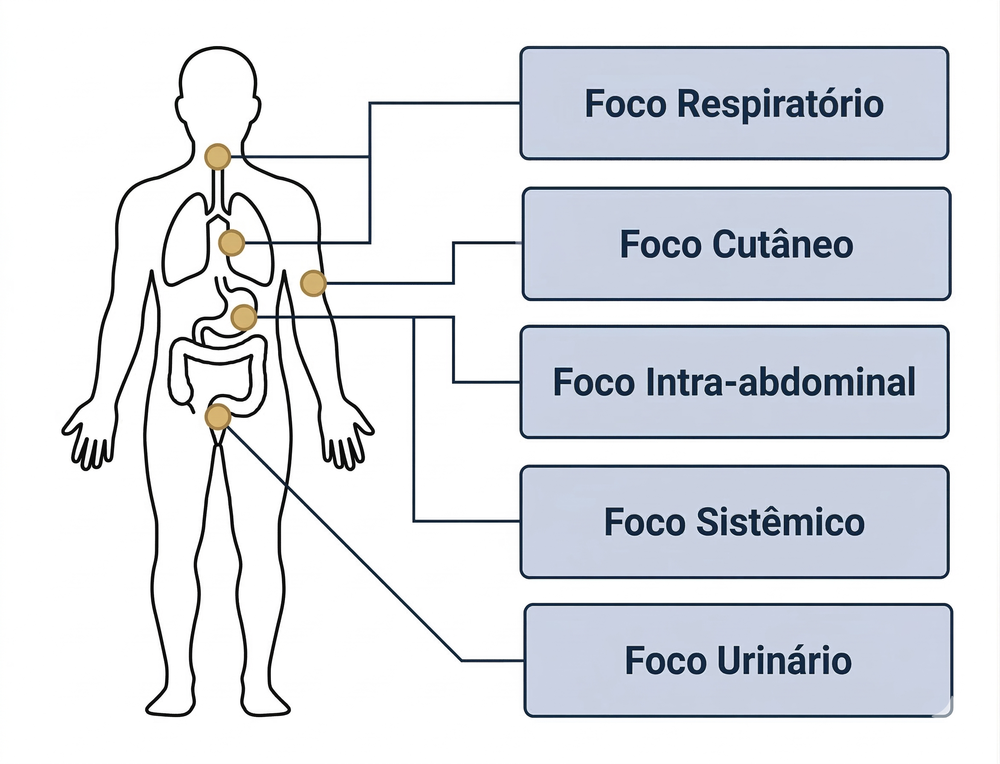

Antibioticoterapia nas principais infecções
Na prática clínica, a decisão inicial sobre antibioticoterapia geralmente ocorre antes da identificação definitiva do microrganismo. Nessa fase inicial, o tratamento baseia-se na estimativa probabilística do foco infeccioso, construída a partir da apresentação clínica, do sítio anatômico envolvido e do contexto epidemiológico.
Essa etapa corresponde à fase empírica da antibioticoterapia antimicrobiana. Como discutido anteriormente, a terapia empírica é iniciada quando o agente etiológico ainda não foi identificado, e sua escolha depende da probabilidade dos microrganismos mais frequentemente associados à infecção naquele contexto clínico.
O raciocínio clínico parte, portanto, do foco provável da infecção e do contexto clínico do paciente. Quadros respiratórios, urinários, intra-abdominais, cutâneos ou sistêmicos apresentam padrões microbiológicos distintos, o que orienta a seleção inicial do espectro antimicrobiano. O objetivo não é antecipar exatamente qual microrganismo está presente, mas estimar quais agentes são mais prováveis e iniciar um tratamento proporcional ao risco clínico.
Esse processo não é automático nem fixo, exigindo avaliação clínica individualizada. Um mesmo tipo de infecção pode exigir abordagens diferentes conforme características do paciente, como idade, comorbidades, hospitalizações recentes, exposição prévia a antibacterianos e presença de dispositivos invasivos. Esses fatores modificam a probabilidade etiológica e podem alterar a escolha inicial do tratamento.
A amplitude do espectro antimicrobiano também deve ser proporcional à gravidade da apresentação clínica. Em pacientes instáveis ou com suspeita de infecção grave, a cobertura inicial tende a ser mais abrangente para reduzir o risco de inadequação terapêutica precoce. Em situações de menor gravidade, a probabilidade de patógenos multirresistentes costuma ser menor, permitindo estratégias mais direcionadas.
À medida que novas informações se tornam disponíveis, especialmente resultados microbiológicos e evolução clínica, a terapia empírica deve ser reavaliada. O estreitamento terapêutico após identificação do agente etiológico faz parte do processo natural de refinamento da decisão clínica.
Também é essencial reconhecer que nem toda manifestação clínica sugestiva de infecção corresponde a doença infecciosa ativa. A integração entre história clínica, exame físico e exames complementares é fundamental para distinguir infecção verdadeira, colonização microbiológica e processos inflamatórios não infecciosos.
Assim, a antibioticoterapia aplicada às principais infecções começa com uma decisão probabilística baseada no foco clínico e evolui progressivamente à medida que a incerteza diagnóstica diminui.
Foco clínico como ponto de partida da decisão empírica
Clique nos pontos destacados para visualizar como cada foco orienta o raciocínio inicial em antibioticoterapia.

A identificação do foco provável da infecção constitui o primeiro passo do raciocínio empírico em antibioticoterapia.
Foco selecionado
Foco respiratório
Nas síndromes respiratórias, o primeiro passo é avaliar se há plausibilidade clínica de infecção bacteriana. Sintomas inespecíficos, como tosse e febre, não bastam isoladamente. A presença de sinais focais, consolidação em imagem e contexto clínico compatível aumenta a probabilidade de pneumonia bacteriana e orienta a escolha empírica inicial.